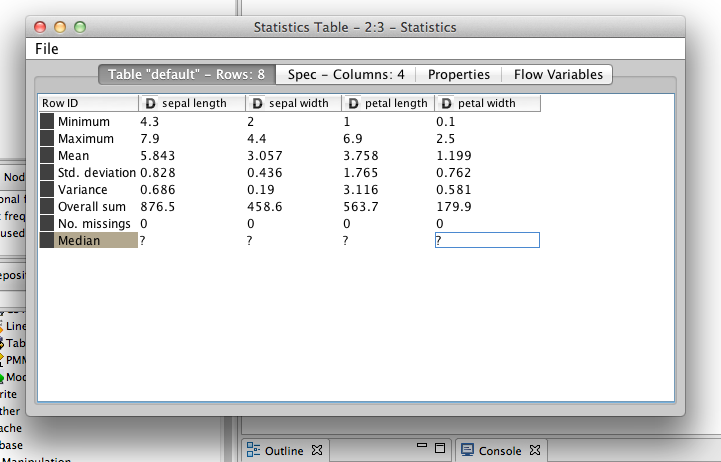
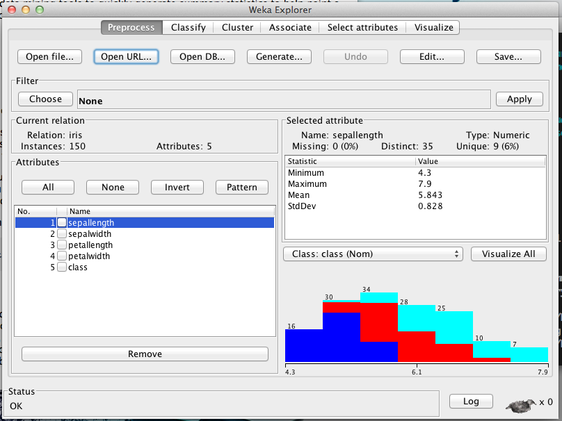
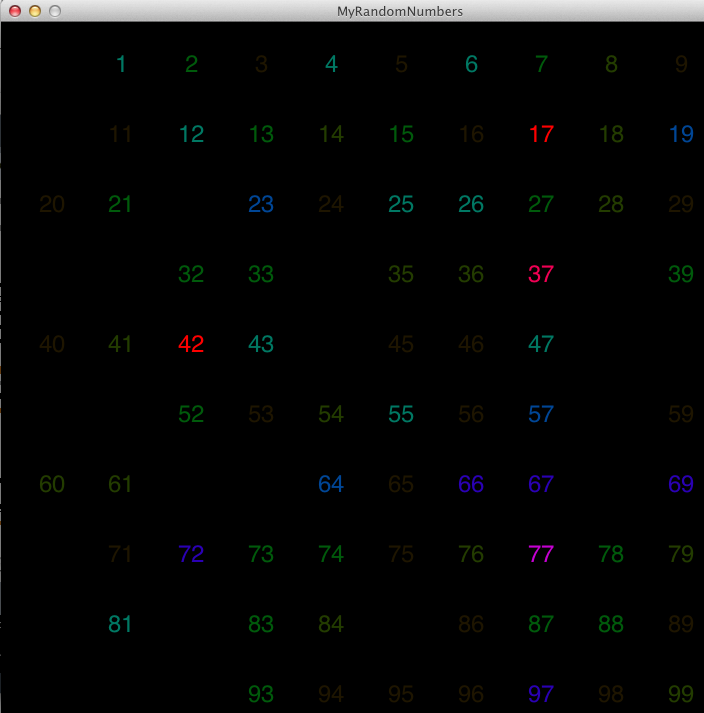

As its name may suggest, Data Mining requires data. There's a lot of different kinds of data, but much of it can be abstracted down to Record-Based, Graph-Based, Ordered Data, or Unstructured Data.
The first dataset we'll explore is Record-Based data. This data is most prevalent in traditional contexts (especially corporate data warehouses). Generally, this data is what's known as Transaction-Based or Market Basket Data. One attribute includes a set of different values. Many times this data is sparse (nobody buys the whole store, except perhaps Oprah: she'll be our outlier) and many times binary-type data. An example of this would be: "Consumer 223989 bought milk, eggs, and cereal." perhaps this is represented as 3 1's in a set of 2500 0's. This kind of data is well represented by sparse matices. Another datatype is Graph-Based data. In Graphs, we have objects and we have relationships between them. Graph-Based data is somewhat more common than it might seem: complex relationships in databases (especially relational databases) are well modeled by graphs (and vice versa). Ordered Data is also quite common and comes in a variety of different flavors. You might have sequential data which is generally temporal data indexed by timestamps, sequence data which has an order but not necessarily any meaningful timestamp associated with it, spatial data which is tied to some location such as weather data, and finally time-series data where each record is a series of measurements taken over time. Unstructured data is some of the hardest to process, and arguably the most interesting. Examples of unstructured data are freeform text (e.g. tweets, movie reviews, etc.), generally written by consumers intended for other consumers.
In each type of data there are different kinds of attributes. These attributes fall into two general categories: categorical (qualitative) and numeric (quantative). Categorical attributes are used to categorize data and are expressed as 'nominal' and 'ordinal'. Nominal attributes are values such as zip codes, id-codes, genders, etc. and exist as labels versus measurable data. Ordinal data are generally discrete attributes such aas hardness, grades, which provide some ranked order or at least taxonomy. Numeric attributes are also interesting, interval data is defined as dates, temperature and other similar attributes. Ratio data is also numeric and includes age, lengths, incomes, prices, and other such numbers.
In thinking of data as something a little more defined than "text" and "numbers" we get a few unintentional and welcome side-effects. Temporal autocorrelation allows us to take time-series data and interpolate missing values given that the data is not too far apart. Spatial autocorrelation is a similar concept, measurements taken in close proximity to each other (such as temperature or humidity data) are often quite similar to each other.
Now that you have data, the question becomes, is it good data? Many of these questions can only be answered after you've applied other methods. A good dataset can be defined as a large amount of relevant data with little data missing and very little error or bias. Unfortunately, data mining is generally applied to data collected for other purposes and quality issues cannot be addressed at time of generation. Data Mining focuses on the detection and correction of data quality issues using algorithms that can tolerate or fix poor data.
Some common data quality issues are measurement and collection issues, noise and artifacting, and precision/bias/accuracy issues. Measurement error originates from either human error or instrument error. Error is defined for continuous attributes, it can be calculated as the difference between the actual value and measured value. Data collection errors can arise due to lost or omitted data, attributes values, or incorrectly included data. Some data is correctable (domain-dependent) using already-developed data mining techniques (such as interpolating values) or omitting statistically impossible data.
Noise is a random element of measurement error. The data may become distorted or fake data objects added to the data set. This kind of error is most often found in spatial/temporal data. Many algorithms exist to help discover noise and reduce it, such as the DBScan clustering algorithm and other tools of anomaly detection. Artifacting is deterministic errors can can be easily handled by algorithms due to their patterns.
Precision, bias, and accuracy also cause many data quality issues. Precision is the closeness of repeated measurements of the same data source, which can lead to over-sensitivity in measurements (especially due to equipment 'jitter'). Bias can also appear, especially just from the units of a data source (for example, height. By not normalizing heights, trends can become lost). Bias can only be detected given known good data.
Missing values, inconsistent values, and duplicate data are real concerns of the data scientist. Missing values can sometimes be regenerated with spatial/temporal autocorrelation or interpolation, removal of the attribute from consideration is always a realistic option too. Inconsistent values can generally be detected and corrected with human or algorithmic assistance (e.g. miskey of a common ordinal value). Deduplication is an open problem, but can generally be solved by merging data which is similar enough using one or many similarity metrics.
Human generated data is among the data with the most errors. Omitted data, mistyped data, and other errors can compound to render a dataset almost unuseable. Survey data is almost always untrustworthy due to psychological bias and the inability of humans to resolve their complex and multifaceted experiences and feelings into a basic set of ordinal values. Structuring surveys in incorrect data leads many people to lazily fill in fields without considering their answers (or even randomly providing an answer). Many techniques can be used to improve the survey taking process, but few are used in practice to the detriment of data everywhere.
Exploring your data is the first, and perhaps the most important step toward understanding your data. Many patterns (or possible issues) can be discovered by utilizing the human brain as the wonderful pattern-discovering tool it is. Unfortunately, our minds can only process a limited amount of data and it must be presented in certain ways (see Visualizing Data). Some of the tools used to discover data are summary statistics.
Common summary statistics are frequency + mode, percentiles, mean, media, trimmed means, min/max, range, variance/standard deviation. These somewhat basic statistical tools an be used to allow a data scientist to better understand his or her data. By reviewing summary statistics of a data set, one can immediately discount certain fields or determine if certain fields are significant. Other, more complex statistics can be generated to help understand other data, one of the more useful being interquartile ranges which can translate into box-and-whisker plots, a useful visualization of fields. Two common data mining tools, KNIME and Weka are shown below generating summary statistics. As you may notice, Weka generates basic visualizations at time of viewing statistics.
 
The right visualization is key to allowing a data miner to not only understand their data, but eventually convey it to others less versed in the dark arts of data science. Charts of all shapes and sizes (box-and-whisker plots, bar graphs, pie charts, line graphs) are incredibly useful tools to display data. The human brain is an incredibly sensitive and powerful data mining tool, given the right input can immediately discover trends and patterns to which a computer is oblivious. The process of data mining is the fusion of man and machine, by empowering a data scientist with powerful algorithms and methods, a data scientist can iteratively discover and enhance otherwise hidden patterns in a set of data.
Processing is one such tool. Processing, a framework for building data-driven visualizations has been ported to a variety of different languages. Java, Ruby, JavaScript are all languages one can implement Processing visualizations in. Below, the visualization for a set of random numbers (chosen by humans) is generated by a Java-dialect Processing application. Immediately apparent is the intensely un-random choice of 42, this is known as the Douglas Adams effect (Douglas Adams's famous book, "The Hitchhikers Guide to the Galaxy"). Glancing at the Google Spreadsheet this data is pulled from shows no appreciable patterns.
